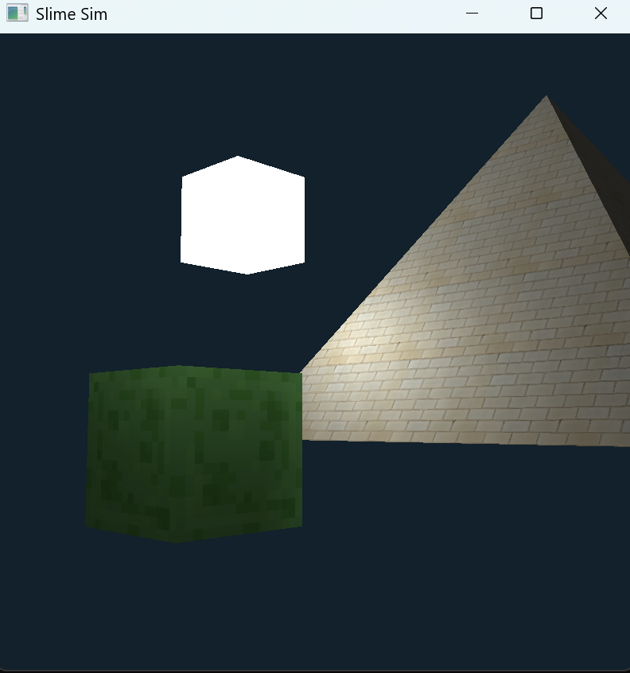

Jelly Warrior: Real-Time Soft-Body Simulation
Names: Jeffrey Lin, Katrina Zhu, Jiaqi Su, Youcheng Tan
Link to Webpage
Link to Presentation Slides
Link to Recording
Link to openGL tutorial
Current Accomplishments
Using openGl and glm, we constructed a simulation of texturized objects under Phong shading following the openGL tutorial linked above, the camera can be controled using WASD, space, and left click dragging.
Inspired by homework 4 part 1 and 2, we built an evenly spaced 2d grid of point-masses, linked them with structural, shearing and bending springs, and compute the total spring and damping forces on each mass. We implemented a Verlet integrator under gravity and enforce Provot's 110% stretch constraint.'
Preliminary Results
Below is an example of the current program:
|

Texturized static slime jelly with a pyramid under Phong shading
|
Progress Reflection and Updated Work Plan
Future Work Plan:
8/5 to 8/11: Add in movement, animations, collision detection for the jellies, better lighting over phong if time allows.
Lift the grid into 3D for jelly.
Tune stiffness and damping for a bouncier feel and add a shape matching step to let each point back to its rest position after the stretch limit.
8/12: Finish presentation slides and video
8/13: Final submission and presentation